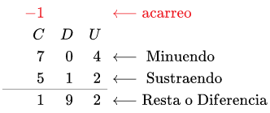

La resta o la sustracción es una operación de aritmética que se representa con el signo (−); representa la operación de eliminación de objetos de una colección. Por ejemplo, en la imagen de la derecha hay 5 − 2 manzanas; significando 5 manzanas con 2 quitadas, con lo cual hay un total de 3 manzanas. Por lo tanto, 5 − 2 = 3. Además de contar frutas, la sustracción también puede representar combinación de otras magnitudes físicas y abstractas usando diferentes tipos de objetos: números negativos, fracciones, números irracionales, vectores, decimales, funciones, matrices y más.
La sustracción sigue varios patrones importantes. Es anticonmutativa, lo que significa que el cambio del orden cambia el signo de la respuesta. No es asociativa, lo que significa que cuando se restan más de dos números, importa el orden en el que se realiza la resta. Restar 0 no cambia un número. La sustracción también obedece a reglas predecibles relativas a las operaciones relacionadas, tales como la adición y la multiplicación. Todas estas reglas pueden probarse a partir de la sustracción de números enteros y generalizarlas mediante los números reales y más allá. Las operaciones binarias generales que siguen estos patrones se estudian en el álgebra abstracta.
Realizar sustracciones es una de las tareas numéricas más simples. La sustracción de números muy pequeños es accesible para los niños pequeños. En la educación primaria, a los estudiantes se les enseña a restar números en el sistema decimal, comenzando con un solo dígito y progresivamente abordando problemas más difíciles. Las ayudas mecánicas van desde el antiguo ábaco a la computadora moderna.
La resta se compone por el minuendo que es el elemento total que queremos sustraer, el sustraendo que es la cantidad que queremos restar y la diferencia que es el resultado final de la resta.
